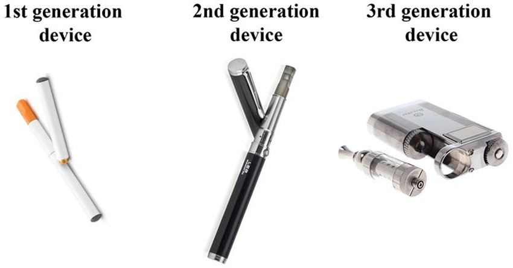

Vaping, or the use of electronic cigarettes, has become a popular alternative to traditional smoking in recent
years, particularly as a means of quitting smoking. While there is still much debate surrounding the safety of
vaping, numerous studies and research conducted in England have consistently found that it is significantly
healthier than smoking cigarettes.
One major advantage of vaping over smoking is the lack of combustion involved. When a cigarette is smoked, the
tobacco
is ignited and burned, releasing a multitude of harmful chemicals and carcinogens into the air. These chemicals have
been linked to a variety of health problems, including lung cancer, heart disease, and stroke. In contrast, vaping
involves the heating of a liquid, typically containing nicotine, flavorings, and other additives, to create an
aerosol
which is then inhaled. This process eliminates the combustion of tobacco and significantly reduces the production of
harmful chemicals.
A study conducted by Public Health England in 2015 found that vaping is at least 95% less harmful than smoking
cigarettes. This conclusion was based on an analysis of the available evidence on the health impacts of
e-cigarettes,
including the levels of toxicants and carcinogens present in the vapor produced by electronic cigarettes. The study
also found that e-cigarettes are significantly less toxic than tobacco cigarettes and that they can help smokers to
quit smoking, particularly when used in combination with stop smoking services.
Another study, published in the Journal of Aerosol Sciences in 2017, found that the levels of harmful chemicals in
e-cigarette vapor were significantly lower than those found in tobacco smoke. The study analyzed the levels of a
variety of toxicants, including formaldehyde, acetaldehyde, and acrolein, and found that they were present at much
lower levels in e-cigarette vapor compared to tobacco smoke.
In addition to the reduced production of harmful chemicals, vaping also allows individuals to more easily control
their nicotine intake. Many e-cigarette liquids come in a range of nicotine concentrations, allowing users to
gradually reduce their nicotine consumption over time. This can be beneficial for individuals looking to quit
smoking
and can help to reduce the risk of nicotine addiction.
It is important to note that while vaping may be significantly less harmful than smoking cigarettes, it is not
completely without risk. Some studies have raised concerns about the potential long-term effects of vaping, and
further research is needed to fully understand the safety of electronic cigarettes. However, the available evidence
suggests that vaping is a much healthier alternative to smoking cigarettes and can be an effective tool for
individuals looking to quit smoking and reduce their exposure to harmful chemicals.
In conclusion, the research conducted in England has consistently shown that vaping is significantly healthier than
smoking cigarettes. While it is not without risk, the reduced production of harmful chemicals and the ability to
control nicotine intake make it a much safer alternative to traditional smoking. If you are a smoker looking to
quit,
consider using e-cigarettes as a means of reducing your risk of tobacco-related health problems.